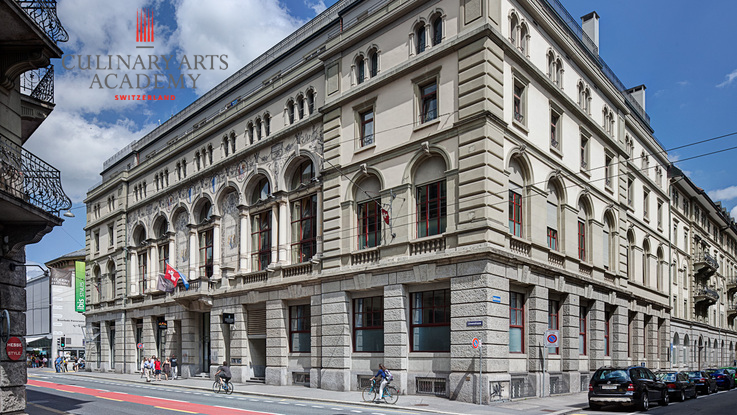

Acasă
Acasă Țări
Țări Catalog
Catalog Galerie foto
Galerie foto Experiente
Experiente Despre
DespreCulinary Arts Academy Switzerland (CAA)



Descriere
Aspira la o cariera in domeniul culinar prin alegerea CAA, parte a Swiss Education Group, una dintre cele mai renumite institute internationale de educatie culinara. Prin pasiune si devotament, Culinary Arts Academy Switzerland va va oferi ingredientele complementare pentru o cariera creativa in domeniul artei culinare. Avand campusuri in centrul orasului Lucerne si Le Bouveret, CAA este situat chiar in inima Europei si inconjurat de traditiile culinare din Italia si Franta. Programul oferit va dezvolta aprecierea dumneavoastra pentru filosofia culinara europeana, competente, traditii si va aduce la cunostinta tendintele moderne.
La CAA veti deprinde deopotriva abilitatile practice necesare in bucatarie, dar si abilitati manageriale prin prisma cursurilor de management; aceste aspecte sunt vitale pentru cei ce isi doresc sa lucreze in domeniu la cel mai inalt nivel. Experienta se dobandeste prin accesarea internship-urilor platite care se desfasoara in restaurante premiate cu stele Michelin, dar si in hoteluri de 4 si 5 stele din Elvetia.
Elevii care desfasoara stagiul de practica in Elvetia primesc un salariu minim de 2172 CHF brut. In anii precedenti, elevii CAA au ales pentru perioada de practica locatii precum: InterContinental, Geneva; Lausanne Palace & Spa; Fairmont Le Montreux Palace; Marriott, Zurich; The Kempinski Grand Hotel des Bains, St. Moritz.
Swiss Education Group ofera pregatire in domeniul ospitalitatii la cel mai inalt nivel in Elvetia in cele 7 campusuri care gazduiesc peste 6500 de studenti. Valorile educationale ale grupului se bazeaza pe excelenta traditiei ospitaliere elvetiene si se concentreaza pe aspectele practice ale managementului hotelier. Aceasta filosofie este aplicata in egala masura in toate scolile grupului:
- César Ritz Colleges Switzerland
- Culinary Arts Academy Switzerland
- Hotel Institute Montreux (HIM)
- School of Hotel Management (IHTTI)
- Swiss Hotel Management School (SHMS)
De ce sa alegi SEG?
1. Combinația unică a programelor academice de top acreditate de universitati din UK si USA
2. Echilibrul practic intre mediul academic si experienta practica
3. Programe specifice, dezvoltate si oferite in parteneriat cu parteneri lideri in industria hoteliera
4. Oportunitati de practica si angajare oferite prin intermediul International Recuitement Forum
5. Expunere carte parteneriate semnificative cu pioni cheie ai industriei
6. Retea de absolventi extisa, unind pana la 20 000 absolventi din intreaga lume
7. Calitatea excepțională a vieții, inclusiv activități sociale și sportive, la nivel local și internațional
8. Diversitate culturala
In fiecare semestru, Swiss Education Group organizeaza International Recruitment Forum, eveniment, dedicat exclusiv studenților SEG, in cadrul caruia ai ocazia sa intalnesti lideri in domeniul ospitalitatii. La editia anterioara a acestui targ exclusivist de joburi, au participat 180 de recrutori si au avut loc peste 2700 de interviuri pe parcursul a doua zile in urma carora studentii au obtinut pozitii full time, de conducere, internship-uri, pregatire pentru pozitii de management sau training-uri in cadrul corporatiilor. Peste 60 de companii iti vor oferi acces la joburi in grupuri hoteliere sau hoteluri de lux, companii de catering sau event management, linii aeriene sau parcuri de distractii. Participarea angajatorilor din întreaga lume, evidențiază reputația și recunoașterea de care elevii și absolvenții SEG se bucură. Toti studentii care aleg un program universitar de licenta cu durata de 3 ani beneficiaza de 2 stagii de practică la nivel international. Aceste stagii de practica reprezinta o parte fundamentală a programului academic oferind studentilor oportunitatea de a dobandi experienta practica intr-un mediu profesional.
Swiss Education Group are parteneriate cu cele mai mari lanturi hoteliere din intreaga lume, unde studentii sai isi fac stagiile de practica din cadrul studiilor. Totodata, universitatile sprijina dezvoltarea permanenta la nivel mondial a acestor domenii, iar tinerii care doresc sa studieze la una dintre universitatile grupului, iar parintii lor administreaza sau detin cel putin o unitate hoteliera, pot beneficia de 20% reducere din toata taxa de scolarizare. De asemenea, o reducere de 10% din taxa se aplica si tinerilor ai caror parinti administreaza sau detin o afacere in domeniul ospitalitatii (restaurante, agentii de turism, hoteluri mici, casinouri, etc.).
19.10.2016 - Swiss Education Group anunta inceperea unei competitii in urma careia castigatorii vor primi burse in valoare de pana la 10 000 de franci elvetieni, pentru a-si sustine o parte din taxele de scolarizare in cadrul universitatilor din grup.
Informații generale
Tara: Elvetia
Limba de predare: engleza
Ani de studiu: Bachelor - 3 ani; Master - 2 ani
Inceput an: septembrie/februarie
Burse: Da
Campusuri: Lucerne, Le Bouveret
Aeroporturi: Geneva, Zurich
Cazare: inclusa in taxa de scolarizare
Programe de studiu:
Bachelor of Arts (Honours) in Culinary Arts (in parteneriat cu University of Derby)
Postgraduate Diploma in Culinary Arts
Master of International Business in Culinary Management
Certificare in Swiss Pastry and Chocolate Arts